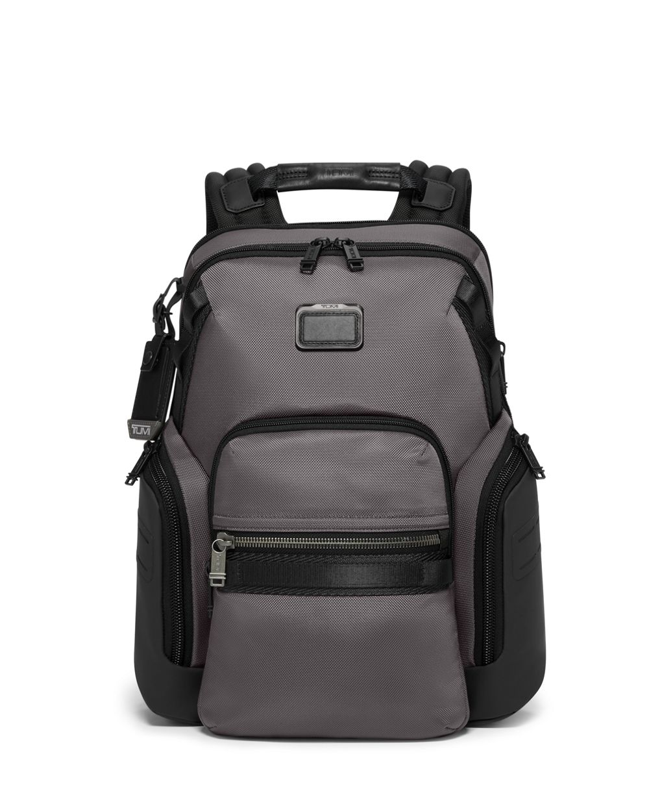

Little Elm, TX
87 F
S 13 mph
Sunny now. Storm watch later.
6 AM briefing, source health, and active intelligence queue.
Sunny now. Storm watch later.
Ranked by impact, source confidence, and personal relevance.
Likely to affect model release checklists, risk reviews, and vendor governance language.
Power-backed capacity is becoming a durable advantage for AI infrastructure players.
Admin policy, auditability, and data controls are moving from nice-to-have to required.
Useful watchlist item for enterprise adoption and compliance tooling trends.
Daily guardrails for OpenAI, Gemini, Anthropic, Kimi 2.5, and local fallback usage.
$2.00 daily cap
58.8k in / 15.8k out
31.2k tokens
24.8k in / 6.4k out8.6k tokens
7.4k in / 1.2k out18.4k tokens
13.6k in / 4.8k out16.4k tokens
13.0k in / 3.4k outKora fallback
not billedBuild the system that makes the right action obvious.
Used in the morning briefing header and dashboard start page.
Videos to review, summarize, or turn into social/job intelligence.
Good fit for EAIS architecture and Kora/Ollama fallback ideas.
Infrastructure context for the data center section and LinkedIn drafts.
Useful for the daily governance watchlist and weekly recap.
Feeds, monitors, and provider APIs that power the briefing.
| Source | Type | Topic | Last Fetch | Health | Action |
|---|---|---|---|---|---|
| OpenAI News | RSS | Vendors | 4 min ago | Healthy | |
| NIST AI | RSS + keyword filter | Governance | 6 min ago | Healthy | |
| Anthropic News | Web monitor | Vendors | Not active | Needs monitor | |
| Data center deals | Search feed | Infrastructure | Queued | Planned |
Searchable morning briefings and decision trail.
24 items, 8 high priority, 2 social drafts generated.
21 items, 5 high priority, 1 job lead saved.
19 items, 4 high priority, 3 items deferred.
Fit-scored opportunities that can become application tasks.
Remote - workflow automation, agent systems, executive operations.
$145k - $185kHybrid - policy, model risk, vendor management, compliance operations.
$130k - $170kRemote - infrastructure markets, power procurement, AI capacity planning.
$120k - $160kAll income projects in one operating view: active, ramping, planned, and watchlist.
Adjust monthly projections and watch the revenue dashboard and Vision Board move together.
Projects EAIS should track, forecast, and push forward.
| Project | Category | Status | Projected Monthly | Confidence | Next Move |
|---|---|---|---|---|---|
|
Pinterest Content Engine
Fitness + skincare pin packs
|
Affiliate / Content | Active | $2,400 | 68% | |
|
KalshiEdge
Signals, edge dashboard, paid intelligence
|
Trading Intelligence | Ramping | $3,500 | 55% | |
|
RepoReel / ClipEngine
Short-form automation and content services
|
Media Automation | Planned | $1,250 | 48% | |
|
EAIS Reports
Executive AI briefings and dashboards
|
AI Intelligence | Concept | $1,300 | 42% |
Goals, things to buy, places to go, and lifestyle targets tied back to revenue streams.
Long-range executive EV target. Tie to revenue milestones and monthly reserve plan.

Daily executive carry upgrade. Good reward for first EAIS revenue milestone.
Dashboard on eais.muvazio.com with daily briefs, revenue, jobs, Joplin archive, and homelab service health.
Vacation targets connected to the same monthly revenue sliders.
A warm, restorative destination for the first real unplugged EAIS win.
Track ideas before they become purchases, projects, or revenue targets.
Daily briefs should autosave to EAIS history and Joplin. The manual button is for resaves, special reports, and notable items.
Approval-first posts generated from high-confidence signals.
The interesting AI infrastructure story is not just GPUs. It is power, permitting, cooling, and who can secure capacity before demand spikes again.
Model policy used to feel abstract. The new signal is practical: documentation, evals, audit trails, and incident processes are becoming table stakes.
Run windows, cron jobs, content engines, and operational tasks in one executive schedule.
Connect your Gmail calendar so EAIS can place cron windows, reviews, and project checkpoints on your daily schedule.
Production should use Google OAuth or a private calendar feed. This mockup keeps credentials out of the browser.
Confirm email, Joplin archive, and top signals.
Review generated fitness and wellness content ideas.
Update income sliders, blockers, and next project actions.
Track exactly when project automation is supposed to run and what needs review afterward.
AI governance, AI vendors, data centers, jobs, and revenue summary.
Pull fitness content ideas, draft pin topics, and queue daily wellness notes.
Skincare and lifestyle content scan for Pinterest, affiliate, and post ideas.
Process selected repos into short-form clips and content drafts.
Monitor production signal health and flag shell-run service issues.
Launch tasks and recurring ops checks that should not disappear into notes.
Ideas waiting for scope, priority, and a clean next action.
Show last run, duration, output, and failure reason for every project cron.
Attach Pinterest drafts, RepoReel clips, and brief archives to each project.
Optional ICS feed so cron windows can appear on a personal calendar.
Future dashboard integrations from CT 301.